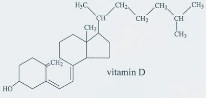

About the Thyroid Gland
The thyroid gland produces the hormones triiodothyrionine (T3) and thyroxine (T4). T3 and T4 are largely responsible for regulating the metabolic rate, thus influencing how much energy you can use, and how many calories you burn in a day.
After any surgery involving the thryroid gland, the production of T3 and T4 can decrease, temporarily or permanently. While the vast majority of patients who undergo a partial thyroidectomy return to full thyroid function within 6-8 months, there are certain nutritional strategies that you can use can aid in its recovery, and help prevent any unwanted side-effects.
Incidence (%) of clinical hypothroidism from Incidences of Hypothyroidism Associated With Surgical Procedures for Thyroid Disorders: A Nationwide Population-Based Study, 2019, Frontiers in Pharmacology
Important Nutrients
There are several nutrients and chemicals that act upon the thyroid gland, each of which I've written more about below. Even better, you can click on the name of any of the headings for more information!
- Iodine
- Selenium
- Zinc
- Vitamin D
- Goitrogens
Iodine
Chemical Formula of Iodine
Iodine is vital for thyroid health. In order to make T3 and T4, your thyroid gland has to use iodine. In the western world it is very rare to be deficient in iodine as there are iodine additives in salt and many foods. Taking an iodine supplement is not recommended as getting too much iodine (an amount impossible to get from food intake alone) has been shown to damage the thyroid gland.
Here are some of the best food sources for iodine:
- Seaweed
- Fish
- Dairy
- Eggs
Selenium
Chemical Formula of Selenium
Selenium plays a vital role in allowing your body to use T3 and T4, and also acts as an antioxidant, preventing further reduction in metabolic rate. Selenium supplementation tends not to be recommended as, similar to iodine, excessive amounts (quantities impossible to attain from food alone) can be toxic.
Some of the best sources of selenium are below, with the first three also being excellent sources of iodine:
- Tuna
- Sardines
- Eggs
- Brazil nuts
- Legumes
Zinc
Bohr Diagram of Zinc
Zinc plays a similar role to selenium in that it allows the body to adequately utilise T3 and T4. Unlike selenium, zinc also plays a regulatory role in TSH (Thyroid Stimulating Hormone) which helps prevent hypothyroidism by stimulating the thyroid gland to produce T3 and T4.
Below are some of the best sources of zinc. Shellfish are one of the best, but I've omitted them for obvious reasons...:
- Oysters
- Beef
- Chicken
Vitamin D
Chemical Formula of Vitamin D
While the mechanism isn't fully understood, low levels of vitamin D have been associated with hypothyroidism, as well as a myriad of other health problems. Ive been using the app dminder to make sure I get enough vitamin D - it helps track and measure vitamin D between exposure to the sun and supplements!
Beyond the sun and supplements, these are some of the best foods for vitamin D:
- Salmon
- Eggs
- Tuna
- Mushrooms
Goitrogens
Goitrogens are substances that can disrupt normal thyroid function by preventing the uptake of iodine into the thyroid gland.
Large amounts of the following foods should be avoided, and if eaten they should be cooked:
- Soy (More oat milk flat whites for Kirsten!)
- Cabbage, Broccoli, Kale, Cauliflower, Spinach
- Sweet Potatoes, Cassava, Peaches
Coffee, Green Tea and Alcohol
In general, it is recommended to avoid regular, high intakes of coffee, green tea and alcohol as they can negatively affect the thyroid gland. However, there does not seem to be any kind of consensus as to what exactly counts as a 'high' intake, and the precise reasons for it aren't totally clear. It is my (professional) opinion that you are not at risk for excessive consumption of any of these, so I wouldn't worry about it :)